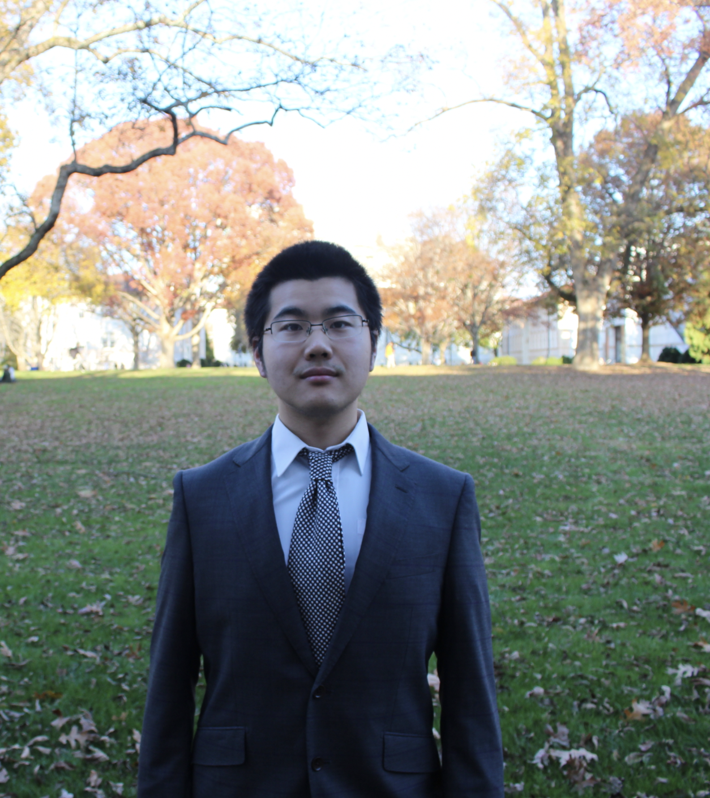

边书阳

关于我
研究经历
校园工作
志愿者
本科教育
技术兴趣
小摆件（暂未公开）
边
书阳
（美国+1）4709674677
shuyangbian@gmail.com
我是学生。
亚特兰大埃默里大学医学院肾科
2022年1月 –
建立小鼠CKD模型(UUO和马兜铃酸)。
采用蛋白印迹法和细胞培养法对肌细胞与肾细胞间的串扰进行体外实验。
基于现有的免疫组织学图像研究肾纤维化。
在CKD小鼠模型中开展BMS作为钾通道打开剂的潜在用途的个人项目
肾研究(SUPERR)暑期本科项目口头报告;ASN肾脏周2022的海报展示，ASN肾脏周2023的摘要提交
美国纽约大学人文学科研究实验室
June 2021 – Aug 2021
提供了对纽约市职业变化的历史模式的见解
设计了一个批处理过程来预处理数据，并将细粒度的职业映射到更广泛的类别
基于地理信息系统(GIS)的转换数据表示
最终结果:https://sites.google.com/view/hrl-occupations-in-new-york/homepage
工作经历
埃默里学生技术支持 2021年9月–
为学生和员工设备配置校园网和软件套件
在商业软件中解决问题，并为用户备份和同步原始数据
修复损坏的操作系统，硬件驱动程序，无法启动的设备，屏幕损坏
纽约大学互动媒体实验室助理，2021年3月- 2021年6月
提供日常支持设备和资源，确保设备被正确入库、出库
协助教师和工作室经理使用工作室和教室空间
志愿者经历
Emory On-Campus Advanced Emergency Medical Technician Aug 2022 –
Assisted the operations of Office of Critical Event Preparedness and Response (CEPAR) as a licensed Georgia provider
Provide standby emergency rescue for high-stakes activities, including Publix Marathon
Render emergency care to deliver basic life support to on-campus patients
Emory Decatur Hospital Volunteer Sep 2022 –
Assist in hospital operations, including wheelchair pushing
Provide directions to patients and visitors
Assist in Golf Cart driving and patient family commute
Currently an ICU Waiting Room volunteer, managing visitor capacity
Learning Assistant of BIOL 120, BIOL 142L Sep 2022 – Apr 2023
Assisted students with difficulties in biology lab operations
Helped Mentors (Instructors) of the Lab component with individual hands-on assistance
Entity Recognition Volunteer, Emory University, NLP Lab by Dr. Jinho Choi, Jan 2022 – Aug 2023
Trained and set up human standards for entity recognition in medical terminology
Assisted in pattern recognition for machine learning model
Red Cross Blood Drive Volunteer Dec 2021 – Apr 2022
Assisted with donors’ registration
Maintain and greeted donors for blood transfusion
Assisted in general supplies in red-cross operations
Herbarium Collections Volunteer Sep 2021 – Dec 2021
Managed the collection and determination of plant samples
Bulk modified data through automation of the workflow by using JavaScript and Selenium
Scanned plant images and modified images using Lightroom before uploading
Volunteer for the 10th Oriental Congress of Nephrology Nov 2020
Helped presenters prepare documents for presentation.
Resolved technical issues during conference.
NYU Community Health Ambassador; Student Leader Sep 2020 – May 2021
In 2020:
Provided students with extra masks, hand sanitizers, and vitamin C tablets during shift
Assisted in health campaign promotion, including preparing video for HIV/AIDS prevention, which won first prize provincial wide.
In 2021:
Organized in-person training for prospective ambassadors
Organized bi-weekly group meetings and facilitated monitor of absence
Designed, created, and promoted new self-care strategies
Education
Emory University
Bachelor of Arts (CS), Science (Biology)
GPA: 3.98
Aug 2021 - May 2024
New York University
Biology and Computer Science
GPA: 3.96
Aug 2020–June 2021
Skills
Programming Languages & Tools
C++
Western Blotting
mRNA
DNA technique
Mice Experiment
NLP
Mini Widgets